HIKARI / ILLUSTRATED TUTORIALS
Hikari tutorials
Step-by-step guides to each part of Hikari, with real screenshots and numbered highlights.
Start with Home dashboard, or open the part of Hikari you are working in. The screenshots use fictional example data.
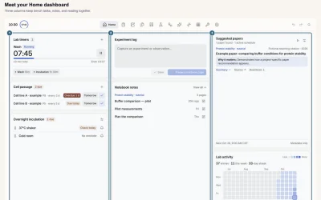
CHAPTER 01Home dashboardSave observations, prepare notebook pages, use timers and reminders, find papers, and check activity.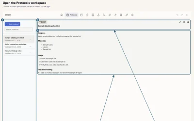
CHAPTER 02ProtocolsCreate and edit procedures, add reusable fields, draft with the assistant, import, export, and print.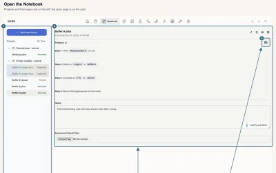
CHAPTER 03NotebookRun protocols as notebook pages, record values, notes, files, and tables, use the bench calculators, and plan experiments.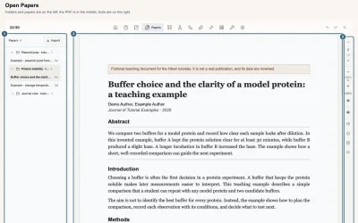
CHAPTER 04PapersBuild your paper library, read and mark up PDFs, search selected text, and read each paper's details and brief.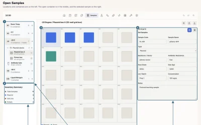
CHAPTER 05SamplesRecord where each sample is stored in boxes, plates, and tubes, fill wells, and import or export containers.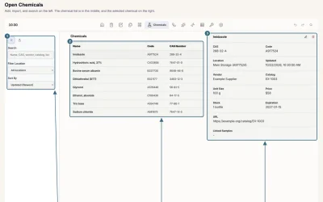
CHAPTER 06ChemicalsKeep the lab's chemical inventory, read location codes, search and sort, and import a spreadsheet.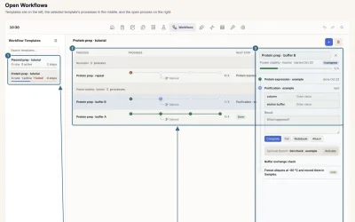
CHAPTER 07WorkflowsRun multi-step work from templates, record each step, add optional branches, and build templates.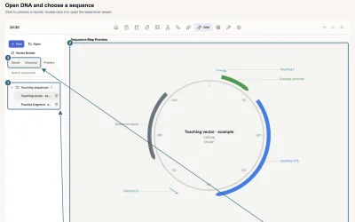
CHAPTER 08DNAOpen and edit sequences, align reads, save fragments, PCR products and digests, assemble fragments, work with vector and protein builders, review cloning designs, and organize primers.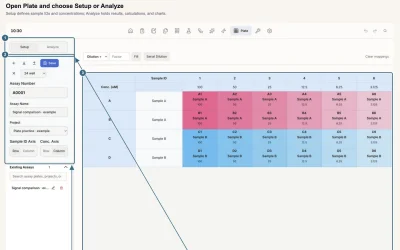
CHAPTER 09PlateMap samples and concentrations, import results, transform and analyze values, and format or export charts.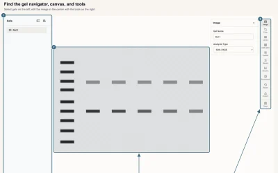
CHAPTER 10GelPrepare gel images, define lanes and bands, inspect intensities and peak areas, arrange stacks, and export figures.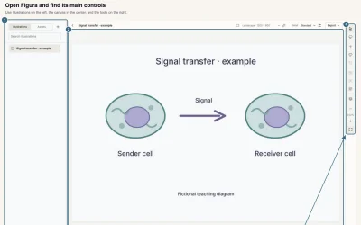
CHAPTER 11FiguraCreate illustrations, edit artwork and labels, arrange and reuse components, and export editable figures.